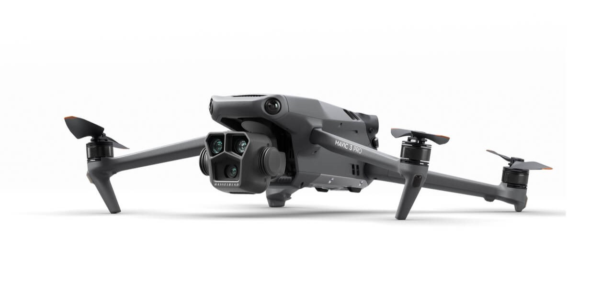

The Best Drones for Photographers in 2025
Drone technology has advanced rapidly, offering photographers an impressive range of high-quality options for capturing aerial shots. Whether you're a professional photographer seeking top-tier quality or a hobbyist looking to explore drone photography, 2024 has some fantastic models. Here's our roundup of the best drones for photographers this year, considering factors like camera quality, flight time, stability, and ease of use.
1. DJI Mavic 3 Pro
Credit dji.com
The DJI Mavic 3 Pro is a powerhouse for professional photographers, with its Hasselblad camera system and a 4/3 CMOS sensor that offers incredible image quality and dynamic range. The Mavic 3 Pro supports 5.1K video at 50fps, allowing photographers to capture stunning detail. With a flight time of up to 46 minutes and advanced obstacle avoidance, it's perfect for capturing complex shots with precision.
- Camera Resolution: 20MP
- Max Video Quality: 5.1K at 50fps
- Flight Time: Up to 46 minutes
- Best For: Professional photographers seeking high-quality images and videos
2. Autel Robotics Evo Lite+
Credit Autel Robotics
The Autel Evo Lite+ is a powerhouse for professional photographers, with its Hasselblad camera system and a 4/3 CMOS sensor that offers incredible image quality and dynamic range. The Mavic 3 Pro supports 5.1K video at 50fps, allowing photographers to capture stunning detail. With a flight time of up to 46 minutes and advanced obstacle avoidance, it's perfect for capturing complex shots with precision.
- Camera Resolution: 50MP
- Max Video Quality: 6K at 30fps
- Flight Time: Up to 40 minutes
- Best For: High-resolution stills and versatile shooting conditions
3. DJI Air 3
Credit dji.com
For those seeking a balance between performance and portability, the DJI Air 3 is a great option. Equipped with dual cameras (wide-angle and telephoto), it provides flexibility for different perspectives. Its 48MP sensor captures sharp images, while the 4K video capability makes it suitable for content creators. With a lightweight design and up to 46 minutes of flight time, the Air 3 is ideal for photographers on the go.
- Camera Resolution: 48MP
- Max Video Quality: 4K at 60fps
- Flight Time: Up to 46 minutes
- Best For: Travel photographers and creators who need portability
4. Parrot Anafi USA
Credit parrot.com
The Parrot Anafi USA is designed for durability, making it ideal for outdoor photographers who often shoot in rugged conditions. It's equipped with a 32x zoom camera and supports 4K HDR video, delivering clear images and footage even from a distance. While it has a shorter flight time, its compact design and rugged build make it a good choice for fieldwork.
- Camera Resolution: 21MP
- Max Video Quality: 4K HDR
- Flight Time: Up to 32 minutes
- Best For: Outdoor and wildlife photographers needing a durable and portable drone
5. DJI Mini 4 Pro
Credit dji.com
For photographers on a budget or beginners, the DJI Mini 4 Pro offers a lot of value. Despite its compact size, this drone captures 4K video and 48MP stills, making it a solid choice for those who want quality without the bulk. Its lightweight design and 34-minute flight time make it easy to use for quick shoots and travel photography.
- Camera Resolution: 48MP
- Max Video Quality: 4K 60fps HDR True Vertical Shooting
- Flight Time: Up to 34 minutes
- Best For: Beginners and budget-conscious photographers
6. Sony Airpeak S1
Credit Sony
The Sony Airpeak S1 is a premium option aimed at professional photographers and videographers. This high-end drone is compatible with Sony's Alpha cameras, allowing photographers to attach their own lenses for superior image quality. With advanced stabilization, obstacle avoidance, and a maximum speed of 55 mph, the Airpeak S1 is built for high-level production work.
- Camera Resolution: Depends on attached camera (compatible with Sony Alpha cameras)
- Max Video Quality: Depends on attached camera
- Flight Time: Up to 22 minutes
- Best For: Professional photographers looking for maximum control over image quality
Choosing the Right Drone for Your Photography Needs
Selecting the best drone depends on your specific photography goals. Here's a quick guide:
- For High-Resolution Stills: Autel Robotics Evo Lite+ or DJI Mavic 3 Pro
- For Versatility and Portability: DJI Air 3 or DJI Mini 3 Pro
- For Action Photography: Skydio 2+ with its autonomous flying capabilities
- For Professional Cinematic Shoots: Sony Airpeak S1 with customizable Alpha camera compatibility
- For Durability in Tough Conditions: Parrot Anafi USA
Final Thoughts
The world of drone photography in 2024 offers a wide range of options for every photographer’s needs and budget. Whether you're a professional looking for high-end quality or an enthusiast just starting out, there's a drone that's perfect for you. As technology advances, drones continue to expand the creative possibilities for photographers, making aerial photography more accessible and exciting than ever.